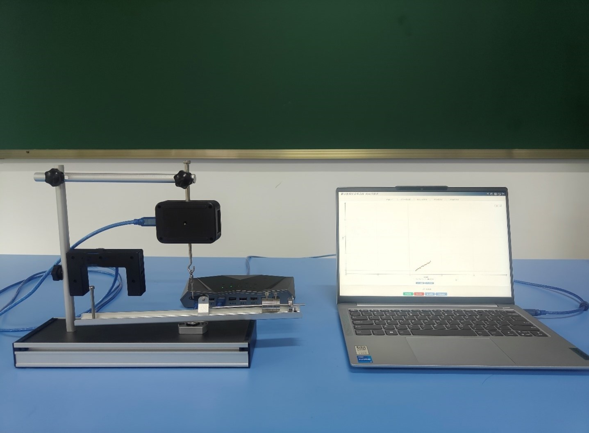
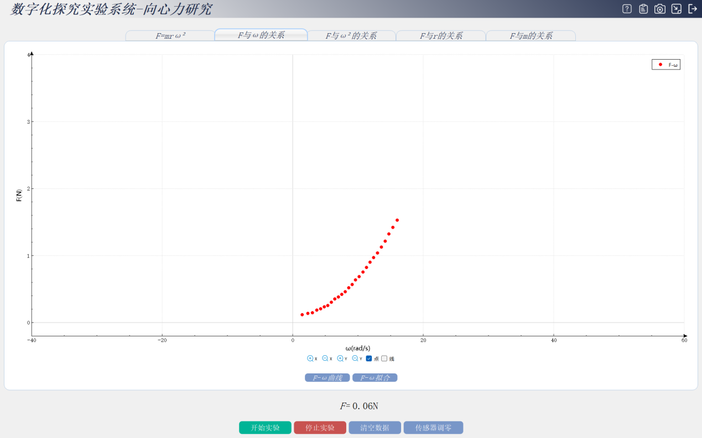
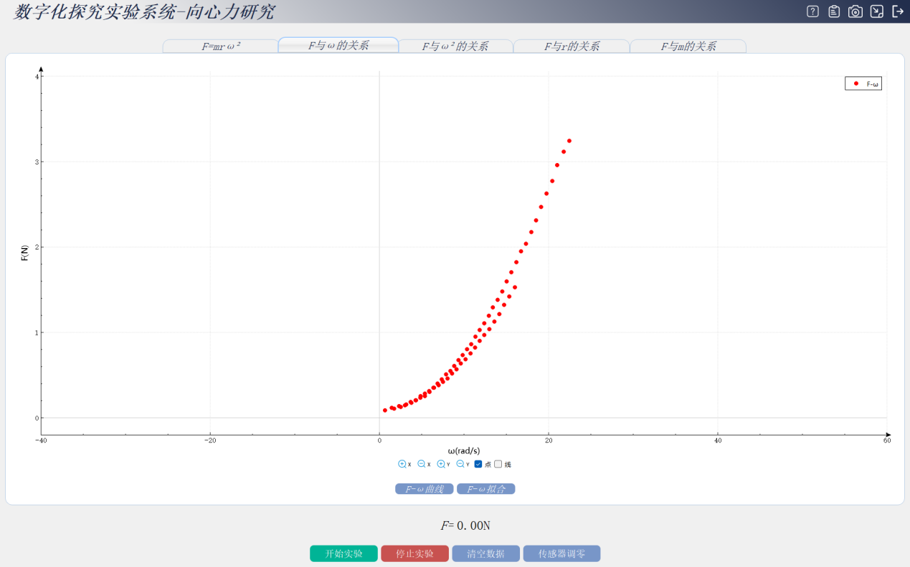
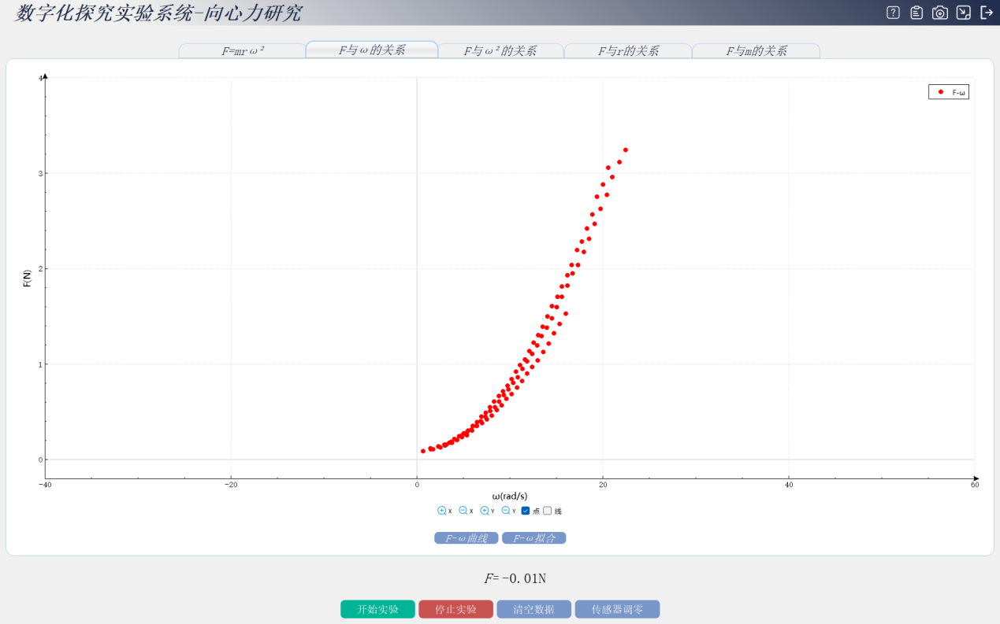
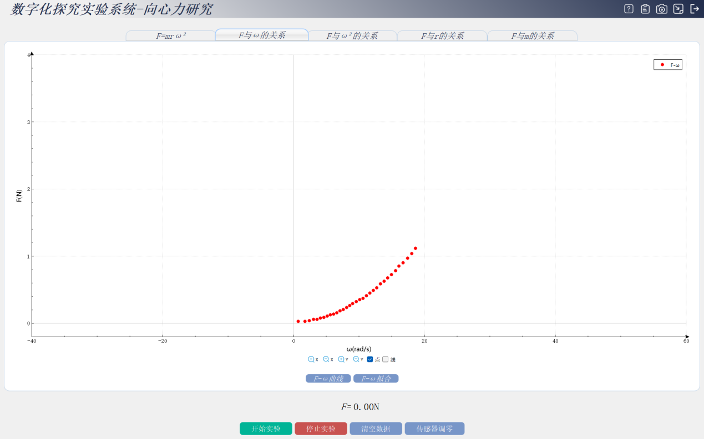
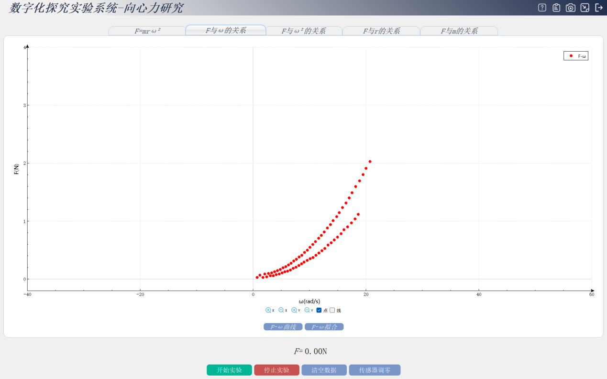
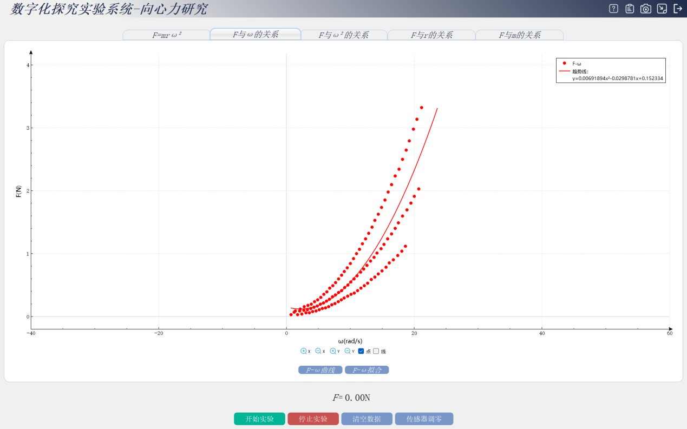

实验二十二 探究影响向心力大小的因素
【实验目的】
探究向心力大小与半径、角速度、质量的关系。
【实验原理】
向心力是当物体沿着圆周或者曲线轨道运动时，指向圆心（曲率中心）的合外力作用力。向心力计算公式：F=mω^2r[ω为角速度（单位rad/s）,m为物体质量（单位kg），r为物体的运动半径（单位m）]。
【实验器材】
数据采集器、力传感器、向心力实验器、计算机等。
【实验装置】

【实验操作步骤】
搭建实验环境，首先将光电门传感器使用连接套件固定在连接杆处，然后用连接套件将力传感器固定在底座上方，竖直向下，将带刻度的转动尺固定在底座处并调节水平状态；
打开思维特向心力专用软件，连接好数据采集器和光电门传感器，力传感器，保持力传感器处于静止状态将力传感器校准调零，即可完成校准；
数据采集 首先探究向心力的大小与角速度的关系分为三个步骤：第一步将质量为50g的配重块固定在实验器刻度尺上比如我们选择固定在90厘米处注意 固定时应保证配重块中心线与刻度线重合在软件实验界面 分别输入重物重心到圆心的距离及重物的质量本次实验取得距离是90厘米 重物的质量为50g第二步 快速转动刻度尺点击实验界面上的开始按钮 开始采集数据。当试验器停止转动时可点击停止按钮 完成第一组数据采集。
数据分析，数据采集完成后我们可以通过观察图像与数据拟合进行数据分析点击数据拟合，由F——ω的图像可以得出拟合线与数据点的分布非常接近由此可以推断出F——ω成二次方关系再点击实验界面F——ω²关系图像来验证推断实验结论：向心力的大小与角速度成二次方关系。

第二步 探究向心力与物体运动圆周半径的关系，在第二组实验中 我们通过保持配重块质量不变调整配重块位置，改变物体运动圆半径来探究向心力与物体运动圆周半径的关系 将质量为50g的配重块固定在无线向心力的试验器刻度尺100厘米处重复第一组实验数据采集步骤

注意 每次改变物体位置时 需重新在实验界面输入正确的距离 采集完成 接下来将距离调整到 110 厘米 120厘米 重复步骤采集多种数据，

数据采集完成 点击拟合按钮 通过分析实验结果得出以下结论： 向心力的大小与物体运动圆周半径成一次方关系。
第三步 探究向心力的大小与物体质量的关系 通过保持配重块位置不变改变配重块质量来探究向心力大小与物体质量的关系 将质量为20g的配重块固定在刻度尺120厘米处 重复实验数据采集步骤

采集完成后 分别将 30g，50g的配重块固定在刻度尺120厘米处采集多组数据。数据采集完成

点击拟合按钮 点击选取ω值

选取F值 点击F——m图像 通过分析实验结果 得出实验结论向心力的大小与物体的质量成一次方关系。对比三组实验结论我们可以发现以下实验规律
【实验结论】
向心力的大小与物体的质量成正比，与物体运动圆周半径成正比，与角速度的平方成正比即F=mω²r。
【注意事项】
实验前，需将试验器调节水平，以确保实验数据的准确性。
使用前需对力传感器进行校准。
【思考与讨论】
向心力与时间有什么关系